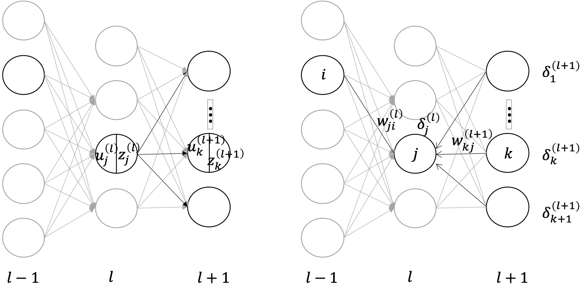

Backpropagation (BP)¶
ក្នុងអត្ថបទមុនយើងបានសិក្សាអំពីដំណើរការរៀនដើម្បីកំណត់តម្លៃប៉ារ៉ាម៉ែត្រនៃFNNតាមរយៈវិធីសាស្រ្ត stochastic gradient descend(SGD)។ ដូចដែលអ្នកអាចចាប់អារម្មណ៍បានក្នុងSGD ការគណនាgradientឬដេរីវេនៃអនុគមន៍កម្រិតលម្អៀងត្រូវបានធ្វើឡើង។ ជាទូទៅការគណនានេះអាចធ្វើបានតាមរយៈការគណនាតម្លៃប្រហែលនៃដេរីវេដោយប្រើតម្លៃអនុគមន៍ផ្ទាល់។ ប៉ុន្តែការគណនាបែបនេះចំណាយពេលច្រើន។ ដើម្បីគណនាgradientឬដេរីវេនៃអនុគមន៍ប្រកបដោយប្រសិទ្ធភាព វិធីសាស្រ្តគណនាgradientដោយប្រើ backpropagation ត្រូវបានប្រើប្រាស់ជាទូទៅ។
ភាពលំបាកក្នុងការគណនា gradient¶
នៅក្នុង stochastic gradient descend ការគណនាតម្លៃ gradient នៃអនុគមន៍កម្រិត លម្អៀង \((\nabla E\left(\pmb{w}\right)=\partial E\left(\pmb{w}\right)/\partial\pmb{w})\)គឺជាដំណាក់កាលដ៏សំខាន់។ ចំពោះFNNច្រើនថ្នាក់ ការគណនា gradient ចំពោះប៉ារ៉ាម៉ែត្រមានភាពស្មុគស្មាញខ្លាំង។ ជាឧទាហរណ៍តម្លៃកម្រិតលម្អៀងចំពោះគម្រូទិន្នន័យសម្រាប់រៀន \(\pmb{x}_n\) នៃចំណោទតម្រែតម្រង់(regression) កំណត់ដោយ \(E_n=\frac{1}{2}||x_n-t_n||^2\)។ យើងសាកល្បងគណនាដេរីវេធៀបនឹងប៉ារ៉ាម៉ែត្រទំងន់ផ្ទាល់ \(w_{ji}^{\left(l\right)}\) នៃថ្នាក់ទី \(l\)។
ដំបូងយើងពិនិត្យឃើញថា
បន្ទាប់មកទៀតយើងត្រូវគណនាដេរីវេ
ដោយលទ្ធផលនៃFNN \(\pmb{y}\left(\pmb{x}\right)\) កំណត់ដោយទម្រង់ខាងក្រោម នោះយើងអាចមើលឃើញបានថាការគណនាដេរីវេតាមវិធីបែបនេះមិនមានប្រសិទ្ធភាពឡើយ ពោលគឺត្រូវចំណាយពេលច្រើនក្នុងការគណនាដោយប្រើProgramming។
វិធីសាស្រ្ត backpropagation អាចជួយដោះស្រាយបញ្ហាគណនាដេរីវេនៃអនុគមន៍បណ្តាក់ច្រើនជាន់បែបនេះបាន។ នៅក្នុងការបង្ហាញខាងក្រោម ដើម្បីសម្រួលដល់ការសរសេរ យើងកំណត់សរសេរតួ bias ជាផ្នែកមួយនៃប៉ារ៉ាម៉ែត្រទំងន់ផ្ទាល់នៃណឺរ៉ូនដែរ ពោលគឺ \(w_{0j}^{\left(l\right)}=b_j^{\left(l\right)}\)។ ហេតុនេះដោយកំណត់ណឺរ៉ូនទី0នៃថ្នាក់\((l-1)\) ឱ្យបញ្ចេញនូវលទ្ធផល \(z_0^{\left(l-1\right)}=1\) ជានិច្ចនោះយើងអាចសរសេរលទ្ធផលនៃណឺរ៉ូនដោយទម្រង់ខាងក្រោម។
ការគណនាតាម backpropagation ករណីFNNមានប៉ារ៉ាម៉ែត្រពីរថ្នាក់(ណឺរ៉ូន៣ថ្នាក់)¶
រូបខាងលើបង្ហាញទម្រង់នៃFNNមានប៉ារ៉ាម៉ែត្រពីរថ្នាក់(ណឺរ៉ូន៣ថ្នាក់)នៃចំណោទតម្រែតម្រង់ (regression)។ អនុគមន៍សកម្ម(activation function) នៃថ្នាក់លទ្ធផលចុងក្រោយកំណត់ដោយអនុគមន៍identity \(\left(f\left(x\right)=x\right)\)។
សន្មតធាតុចូលនៃបណ្តាញនេះដោយ \(\pmb{x}=\left[x_1\ x_2\ x_3\ x_4\right]^\top\)។ លទ្ធផលនៃថ្នាក់ណឺរ៉ូនទីមួយពោលថ្នាក់ធាតុចូលគឺ \(z_i^{\left(1\right)}=x_i\) និងលទ្ធផលនៃថ្នាក់កណ្តាល\(z_j^{\left(2\right)}\) ព្រមទាំងលទ្ធផលនៃថ្នាក់លទ្ធផលចុងក្រោយ\(y_j\left(\pmb{x}\right)=\ z_j^{\left(3\right)}\) កំណត់ដោយទម្រង់ខាងក្រោម។
សន្មតយកផលបូកការេនៃលម្អៀងជាអនុគមន៍កម្រិតលម្អៀងនៃបណ្តាញនេះ។
ពេលនេះយើងពិនិត្យលើការគណនាដេរីវេនៃអនុគមន៍នេះធៀបនឹងប៉ារ៉ាម៉ែត្ររបស់វា។
ដំបូងយើងគណនាដេរីវេធៀបប៉ារ៉ាម៉ែត្រនៃផ្នែកថ្នាក់លទ្ធផលចុងក្រោយនៃបណ្តាញ
ដោយ
នោះ
ដូច្នេះ
បន្ទាប់ពីនេះ យើងពិនិត្យលើថ្នាក់កណ្តាល \(\frac{\partial E_n}{\partial w_{ji}^{\left(2\right)}}\)
ដោយ
នោះយើងបាន
ម្យ៉ាងទៀត បើយក \(k\) ជាចំនួនណឺរ៉ូននៅ ថ្នាក់លទ្ធផលចុងក្រោយនោះ \(E_n\) មាន \(u_1^{\left(3\right)},\cdots,u_k^{\left(3\right)}\) ជាអថេរដែលយើងអាចសរសេរអនុគមន៍ដេរីវេដូចខាងក្រោម។
ដោយ
ហេតុនេះ យើងបាន
ករណីទូទៅ៖ FNNច្រើនថ្នាក់¶

ដំបូង យើងពិនិត្យលើប៉ារ៉ាម៉ែត្រ \(w_{ji}^{\left(l\right)}\) នៃថ្នាក់ទី \(l\) ។
ដោយពិនិត្យរូបឆ្វេង បម្រែបម្រួលនៃ\(u_j^{\left(l\right)}\) ជះឥទ្ធិពលលើតម្លៃនៃ\(E_n\) តាមរយៈតម្លៃនៃ\(z_j^{\left(l\right)}\) និងតម្លៃលទ្ធផលនៃណឺរ៉ូននៅថ្នាក់ទី\(\left(l+1\right)\)។ ហេតុនេះយើងបាន
ដោយពិនិត្យលើកន្សោមខាងលើ យើងឃើញថា \(\partial E_n/\partial u_j^{\left(\bullet\right)}\) បង្ហាញនៅអង្គទាំងសង្ខាង។ នៅទីនេះយើងសន្មតតាង
ដោយប្រើទំនាក់ទំនង
យើងបាន
។ ហេតុនេះ
តាមទំនាក់ទំនងនេះបង្ហាញថាយើងអាចគណនា \(\delta_j^{\left(l\right)}\)បានដោយប្រើតម្លៃនៃ\(\delta_k^{\left(l+1\right)}\ \left(k=1,2,\ldots\right)\)។មានន័យថា បើយើងដឹងតម្លៃ\(\delta\) របស់ថ្នាក់ខាងលើពោលគឺ\((l+1)\) នោះយើងអាចគណនាតម្លៃ \(\delta\) នៅថ្នាក់ក្រោមបន្តបន្ទាប់តាមទំនាក់ទំនងនេះ។ រូបស្តាំ បង្ហាញពីដំណើរការនៃការគណនា\(\delta\) ពីថ្នាក់លើឆ្ពោះទៅថ្នាក់ក្រោមបែបនេះ។ ទំនាក់ទំនងខាងលើនេះពិតជានិច្ចចំពោះគ្រប់ថ្នាក់ទាំងអស់នៃបណ្តាញ។
ដូច្នេះបើ \(\delta\) នៅថ្នាក់លទ្ធផលចុងក្រោយត្រូវបានគណនា នោះ យើងអាចគណនា \(\delta\) ពោលគឺដេរីវេនៃប៉ារ៉ាម៉ែត្រនៅថ្នាក់ក្រោមជាបន្តបន្ទាប់បានដោយអនុវត្តតាមទំនាក់ទំនងងាយខាងលើ។ ដោយសារតែលំដាប់នៃការគណនា \(\delta\) នៅទីនេះមានទិសដៅផ្ទុយពីទិសដៅបញ្ជូនសញ្ញាណក្នុងការប៉ាន់ស្មានលទ្ធផលរបស់បណ្តាញ ដូចនេះទើបគេហៅឈ្មោះវិធីសាស្រ្តនេះថាជា backpropagation។
ត្រលប់មកផ្នែកនៅសល់នៃ \(\frac{\partial E_n}{\partial w_{ji}^{\left(l\right)}}=\frac{\partial E_n}{\partial u_j^{\left(l\right)}}\frac{\partial u_j^{\left(l\right)}}{\partial w_{ji}^{\left(l\right)}}\)
ដោយ \(\frac{\partial E_n}{\partial u_j^{\left(l\right)}}\) អាចគណនាបានដោយគណនា \(\delta\) ដូច្នេះ យើងពិនិត្យលើ \(\frac{\partial u_j^{\left(l\right)}}{\partial w_{ji}^{\left(l\right)}}\)
តាមទំនាក់ទំនង \(u_j^{\left(l\right)}=\sum_{i=0}^{k}{w_{ji}^{\left(l\right)}z_i^{\left(l-1\right)}}\) នោះ \(\frac{\partial u_j^{\left(l\right)}}{\partial w_{ji}^{\left(l\right)}}=z_i^{\left(l-1\right)}\) ហេតុនេះយើងបាន
ដូចបង្ហាញក្នុងទំនាក់ទំនងដែលទាញបាននេះ ការគណនាដេរីវេដោយផ្នែកនៃអនុគមន៍កម្រិតលម្អៀងធៀបប៉ារ៉ាម៉ែត្រ\(w_{ji}^{\left(l\right)}\)ដែលភ្ជាប់ណឺរ៉ូនទី \(i\) នៃថ្នាក់ទី\(\left(l-1\right)\)និងណឺរ៉ូនទី \(j\) នៃថ្នាក់ទី\((l)\) អាចគណនាបានយ៉ាងងាយដោយប្រើ \(\delta_j^{\left(l\right)}\) នៃណឺរ៉ូនទី\(j\) នៃថ្នាក់ទី\((l)\) និងលទ្ធផល\(z_i^{\left(l-1\right)}\)នៃណឺរ៉ូនទី \(i\) នៃថ្នាក់ទី\(\left(l-1\right)\)។ ដូចបានបញ្ជាក់ខាងលើ \(\delta_j^{\left(l\right)} \)អាចគណនាបានដោយគណនាជាបន្តបន្ទាប់ពីថ្នាក់ខាងលើតាមទំនាក់ទំនងដែលបានទាញពីខាងដើម។ ក្នុងករណីនេះ \(\delta_j^{\left(L\right)}\)នៃថ្នាក់ខាងលើបំផុត(ថ្នាក់លទ្ធផលចុងក្រោយ)អាចកំណត់បានដោយ
ដែលការគណនាជាក់ស្តែងប្រែប្រួលទៅតាមប្រភេទនៃអនុគមន៍កម្រិតលម្អៀង(ទៅតាមចំណោទ)។
ដោយបូកសរុបការគណនាខាងលើ នៅពេលដែលគម្រូទិន្នន័យសម្រាប់រៀន\(\left(\pmb{x}_n,\pmb{t}_n\right)\) ត្រូវបានផ្តល់ gradientឬដេរីវេនៃអនុគមន៍កម្រិតលម្អៀងអាចគណនាបានតាមលំដាប់លំដោយខាងក្រោម។ ក្នុងករណីនៃការរៀនជាក្រុមតូច(minibatch) ផលបូកនៃgradient បានមកពីការគណនា ចំពោះគម្រូទិន្នន័យនិមួយៗត្រូវបានយកជាgradientនៃក្រុមតូចនោះ
Input : គម្រូទិន្នន័យសម្រាប់រៀន \(\left(\pmb{x}_n,\pmb{t}_n\right)\)
Output : gradientឬដេរីវេនៃអនុគមន៍កម្រិតលម្អៀង \(\frac{\partial E_n}{\partial w_{ji}^{\left(l\right)}}\ \ \left(l=2,\ldots,L\right)\)
ដោយយក \(\pmb{z}^{\left(1\right)}=\pmb{x}\) គណនាតម្លៃនៃ \(\pmb{u}^{\left(l\right)},\pmb{z}^{\left(l\right)}\ \ \left(l=2,\ldots,L\right)\)តាមលំដាប់
គណនា \(\delta_j^{\left(L\right)}\)(តាមធម្មតាវាត្រូវបានកំណត់ដោយ\(\delta_j^{\left(L\right)}=z_j-t_j\))
ចំពោះថ្នាក់កណ្តាល\(\left(l=L-1,\ L-2,\cdots,2\right)\) គណនាតម្លៃ\(\delta_j^{\left(l\right)}\) តាមលំដាប់ដោយ\(\delta_j^{\left(l\right)}=\sum_{k}{\delta_k^{\left(l+1\right)}\left(w_{kj}^{\left(l+1\right)}f\left(u_j^{\left(l\right)}\right)\right)}\)
ចំពោះថ្នាក់ទី \(l\ \left(l=2,\cdots,L\right)\) គណនាតម្លៃ\(\frac{\partial E_n}{\partial w_{ji}^{\left(l\right)}}\) ដោយ\(\frac{\partial E_n}{\partial w_{ji}^{\left(l\right)}}=\delta_j^{\left(l\right)}z_i^{\left(l-1\right)}\)
ការគណនា\(\delta_j^{\left(L\right)}\)នៃថ្នាក់លទ្ធផលចុងក្រោយ¶
ដូចបានបង្ហាញខាងលើ ការគណនា \(\delta_j^{\left(L\right)}\) នៃថ្នាក់លទ្ធផលចុងក្រោយអាស្រ័យនឹងប្រភេទអនុគមន៍កម្រិតលម្អៀងដែលប្រើ ពោលគឺអាស្រ័យនឹងប្រភេទនៃចំណោទ។
ករណីចំណោទតម្រែតម្រង់ Regression¶
ក្នុងករណីចំណោទតម្រែតម្រង់អនុគមន៍កម្រិតលម្អៀងគឺជាផលបូកការេនៃលម្អៀងលើគម្រូ ទិន្នន័យនិមួយៗ។
ក្នុងករណីនេះ អនុគមន៍សកម្ម(activation)នៃថ្នាក់លទ្ធផលចុងក្រោយនៃFNNគឺជាអនុគមន៍identity:
។ ហេតុនេះ \(\delta_j^{\left(L\right)}\) នៃថ្នាក់លទ្ធផលចុងក្រោយគឺ
ពោលគឺគម្លាតរវាងតម្លៃលទ្ធផលនៃបណ្តាញ(ណឺរ៉ូន)និងលទ្ធផលក្នុងទិន្នន័យសម្រាប់រៀន។
ករណីចំណោទចំណាត់ថ្នាក់ក្រុម Classificaiton¶
ក្នុងចំណោទចំណាត់ថ្នាក់២ក្រុម អនុគមន៍កម្រិតលម្អៀងត្រូវបានកំណត់ដោយ
ក្នុងករណីនេះ អនុគមន៍សកម្មនៃថ្នាក់លទ្ធផលចុងក្រោយនៃFNNគឺជាអនុគមន៍ sigmoid ហេតុនេះ
ដូច្នេះយើងបាន
ក្នុងចំណោទចំណាត់ថ្នាក់ច្រើនក្រុម អនុគមន៍កម្រិតលម្អៀងត្រូវបានកំណត់ដោយ
ក្នុងករណីនេះ អនុគមន៍សកម្មនៃថ្នាក់លទ្ធផលចុងក្រោយនៃFNNគឺជាអនុគមន៍ softmax ហេតុនេះ
ដូច្នេះយើងបាន
តាមលទ្ធផលខាងលើ ទាំងករណីចំណោទតម្រែតម្រង់ ទាំងករណីចំណោទចំណាត់ថ្នាក់ ក្រុម \(\delta_j^{\left(L\right)}\) នៃថ្នាក់លទ្ធផលចុងក្រោយគឺ \(\delta_j^{\left(L\right)}=y_j-t_j\) ពោលគឺគម្លាតរវាងតម្លៃលទ្ធផលនៃបណ្តាញ(ណឺរ៉ូន)និងលទ្ធផលក្នុងទិន្នន័យសម្រាប់រៀន។